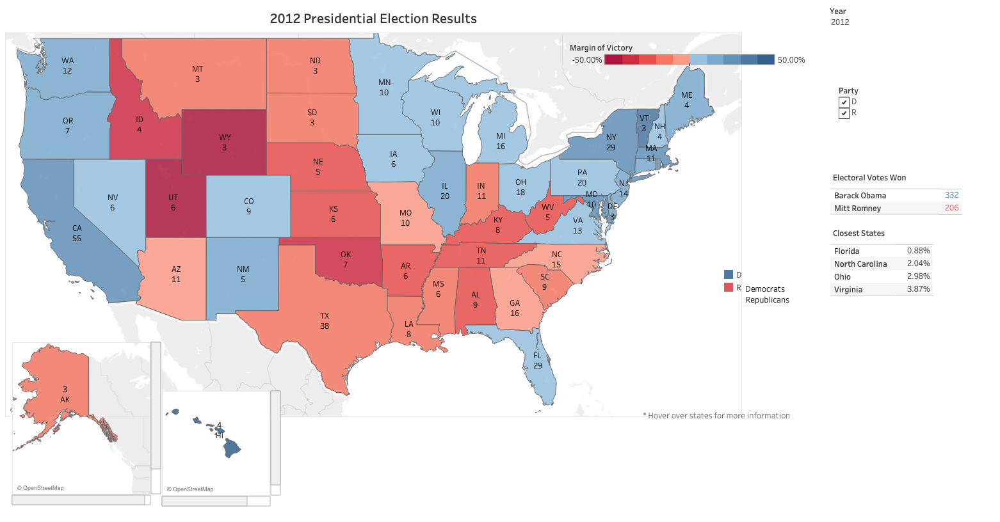
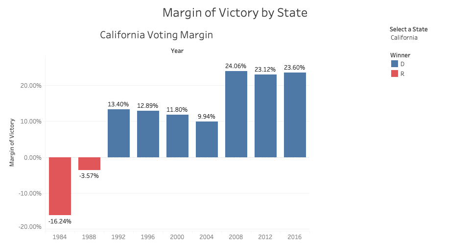

Phototype
Visualize the “ Presidental Election”
Is there a visible voting patterns of US Presidential Election from 1984 to 2016?
We can also draw conclusions from the Presidential map: the same few swing states usually decide the election, the country is getting more polarized, and there is evidence of a partisan realignment. New England states used to be reliably Republican, but since 1992 they have been reliably Democratic.
In the 1990s a Southern Democrat like Bill Clinton was able to win Southern states, but they are now uniformly Republican, and have gotten more and more Republican leaning over time. The country has become more polarized politically, and there are fewer states where the margin of victory is small. This means that fewer states swing between parties from one election to the next, and the states that do swing have disproportionate impact on the election.

I also created a bar graph to show up the margin of victory. Af first I want to created a time-series line graph to display how the voting patterns in each state have evolved over several elections. However, a line graph didn’t show up well when the margin of victory was close to zero. When I replaced it with a bar graph, I was able to show the difference and contrast the colors more easily.
In below Diagram, except 1984(Ronald Reagan) and 1988(George HW Brush), CA is a uniformly Democrat.
Encoding
I built a geocoded electoral choropleth map in Tableau, using red for Republican states and blue for Democratic states. The depth of color also represents the margin of victory, the darker color means greater margin of victory.
Interactivity
I included a tooltip that shows information on the winning candidate, the margin of victory, and the number of electoral votes. I also made a list of the swing states where the margin of victory was less than 5%. I created a time-series bar graph to display how the voting patterns in each state have evolved over several elections.
Peer Feedback
- Feedback:
- There is hard to understand what's the numbers underneath the states mean to people who aren't familiar with it.
- About the color encoding, the closer the margin is to 0, they could be a little more grey in the map.
- Color groups democrat leaning and republican leaning states, maybe there could be a way put some sort of emphasis on swing states to show they are the swing states?
- Improved:
- Add more context about how to understand the means of swing states which margin of victory is lower than 5%.
- When the margin is closer to 0, it will have more grey color showing in the map, it also kinda a way to put some emphasis on the swing states.